Dr. Rafael Souza
A excelência técnica abre portas, mas é a comunicação que sustenta sua carreira. Domine a gestão de conflitos no consultório, o posicionamento nos palcos e a liderança de equipes com o método Master.
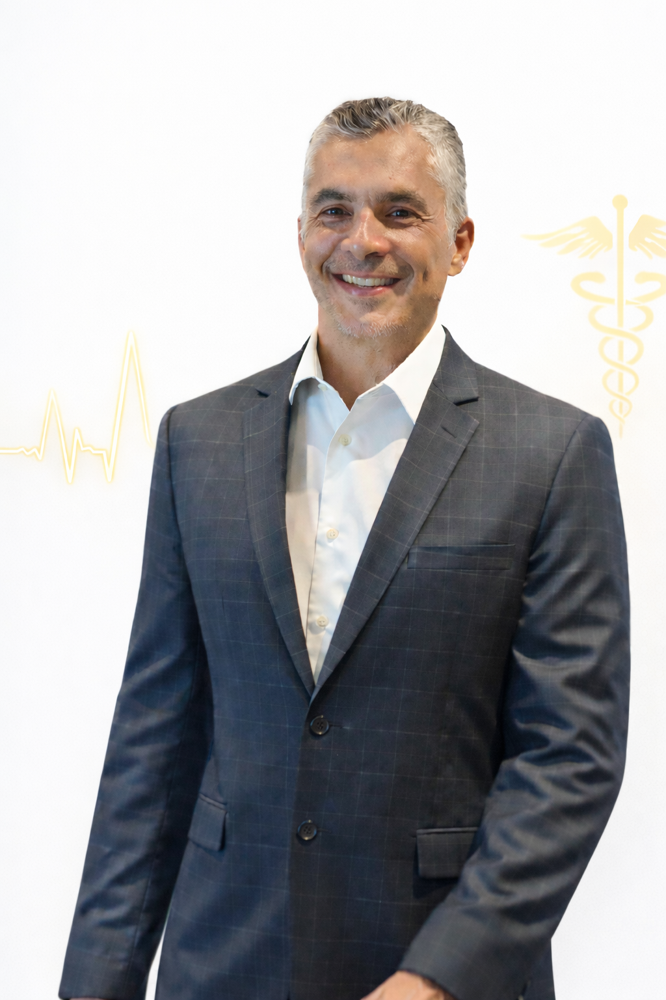
Estudos comprovam que uma parcela significativa das reclamações, processos éticos e judicializações na saúde não nascem de falhas técnicas, mas sim de falhas de comunicação e ausência de empatia. O paciente raramente processa o médico em quem ele confia.
Soft skill não é apenas "ser legal", é resultado clínico mensurável. Pesquisas internacionais demonstram que médicos com altos níveis de empatia garantem maior adesão ao tratamento, apresentando impactos reais na cura.
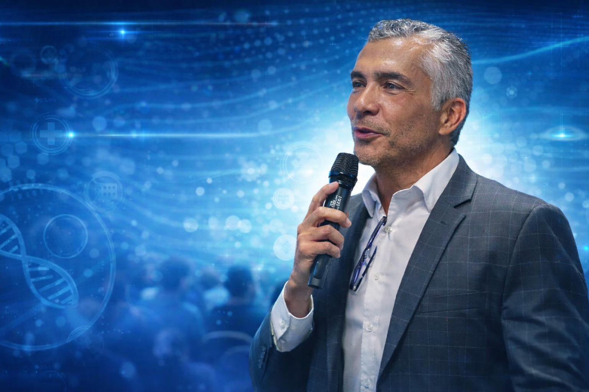
Framework prático para o consultório e hospital. Aplique o Algoritmo de 5 Etapas e utilize os "Scripts de Bolso" exatos para desarmar pacientes agressivos, controladores ou exaustos.
Transforme a ansiedade em presença magnética. Aprenda a neurobiologia do carisma e as estruturas de discurso (abertura, corpo e fechamento) para dominar congressos e aulas.
Passe do poder posicional (título) para o poder pessoal (confiança). Técnicas de coaching para equipes, mediação de conflitos organizacionais e roteiros para reuniões 1:1 e feedbacks.
Entende que cuidar de quem cuida não é clichê e deseja transformar o clima organizacional da sua clínica ou hospital através da gestão humanizada.
Quer inspirar equipes, blindar sua carreira contra ruídos de comunicação e fortalecer os vínculos com seus pacientes usando ciência e empatia.
Deseja se posicionar como uma verdadeira autoridade no seu nicho, dominando a oratória e sustentando decisões em cenários de alta complexidade.
"Não espere o momento perfeito. Ele nasce quando você decide agir. O sonho que te move é bem maior que as críticas. Bora sair do lugar!"
Escolha o formato que melhor se adapta ao seu momento profissional.
Framework prático para o consultório e hospital. Aplique o Algoritmo de 5 Etapas e utilize scripts exatos para desarmar pacientes e familiares em vulnerabilidade emocional.
Transforme a ansiedade em presença magnética. Domine palcos, congressos e reuniões com a neurobiologia do carisma e estruturas persuasivas de discurso.
Passe do poder posicional para o pessoal. Técnicas avançadas de mediação de conflitos, roteiros de 1:1, feedbacks e construção de culturas de alta performance. (Inclui acesso aos módulos de Soft Skills e Oratória).
A verdadeira liderança se prova na linha de frente e na conexão humana. Veja registros das capacitações e o carinho com nossa maior prioridade: as pessoas.
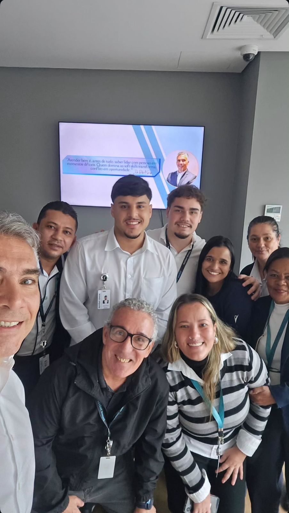
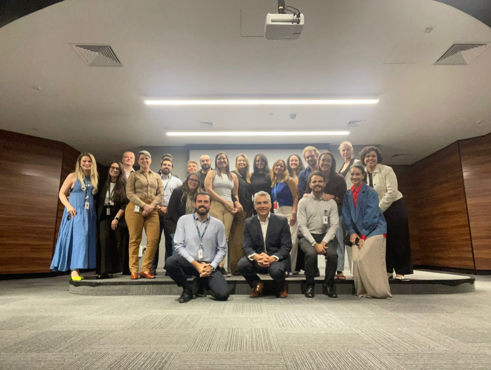
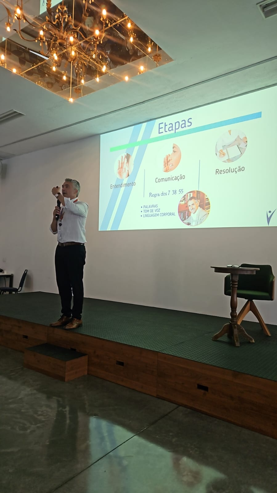
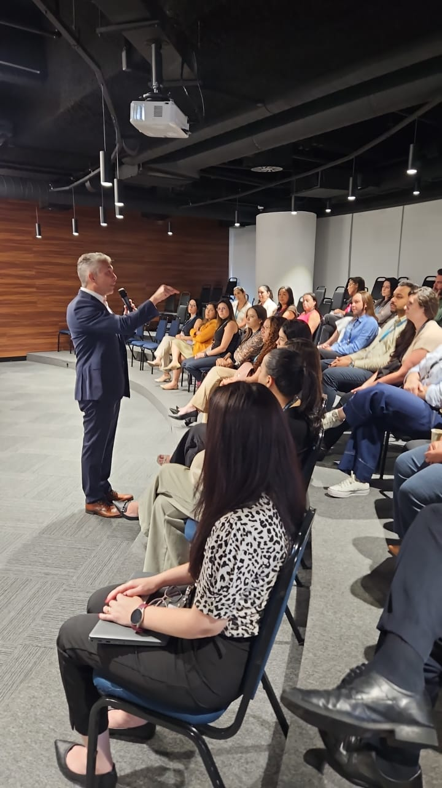
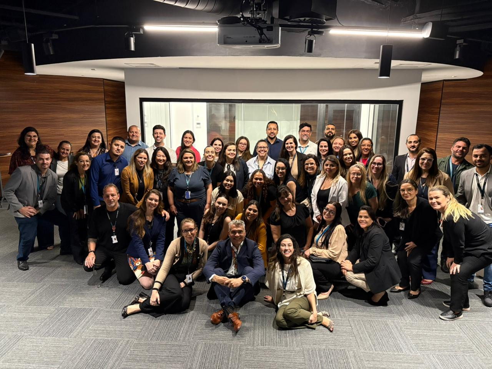
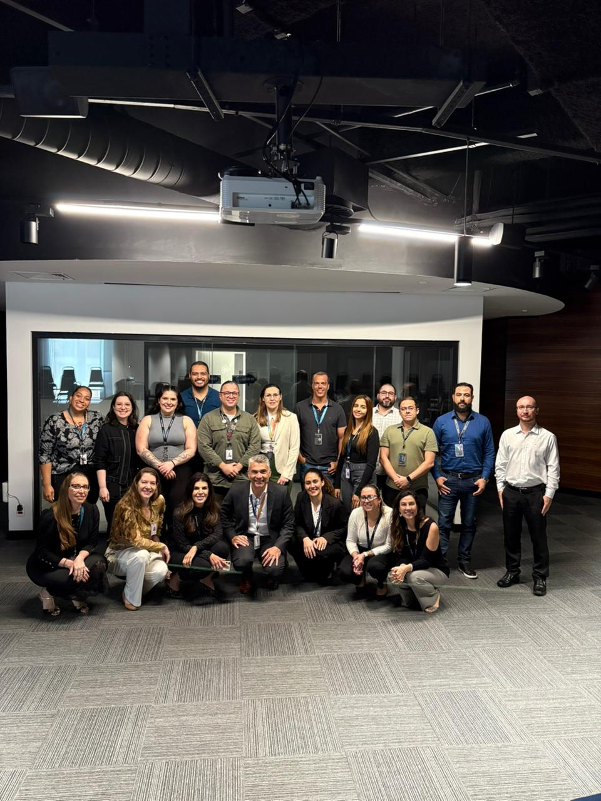
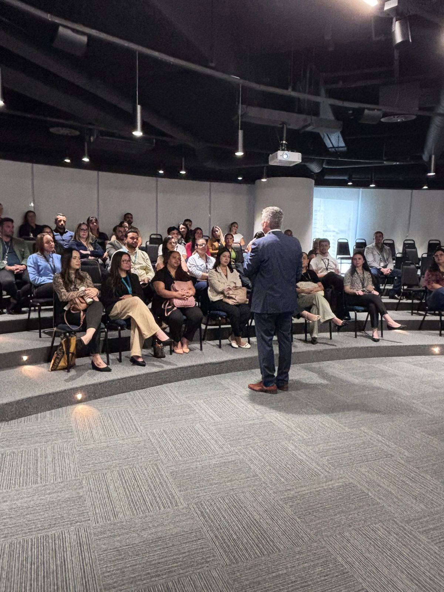
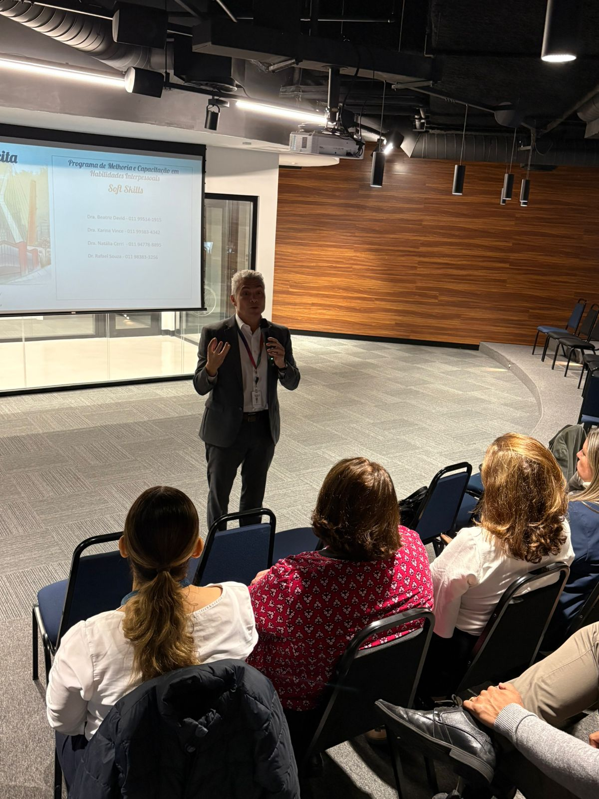
"Foi ótima!! Muito bom, o Rafa explica super bem e deu dicas práticas! Adorei."
Aluna da Capacitação
"Foi excelente a aula! O Dr Rafael é bem didático e deu ótimas dicas de como se comportar em frente a diversas personalidades de pacientes no nosso dia a dia! Eu gostei muito!"
Aluno da Capacitação
"Excelente aula!!! 👏👏👏 Deveria ter esse tipo de aula nas faculdades de medicina!!!"
Aluno da Capacitação
"Gostei bastante. É um tema bem importante. Ele abordou muito bem. Tem uma didática e comunicação muito boas."
Médico(a) Participante
"Foi excelente. Analisa muito bem o beneficiário e passou dicas práticas de como lidarmos melhor com eles."
Médico(a) Participante
"Uma aula técnica em relação a como contornar as personas habituais dos pacientes. Achei muito bom. Muito articulado e dinâmico."
Médico(a) Participante
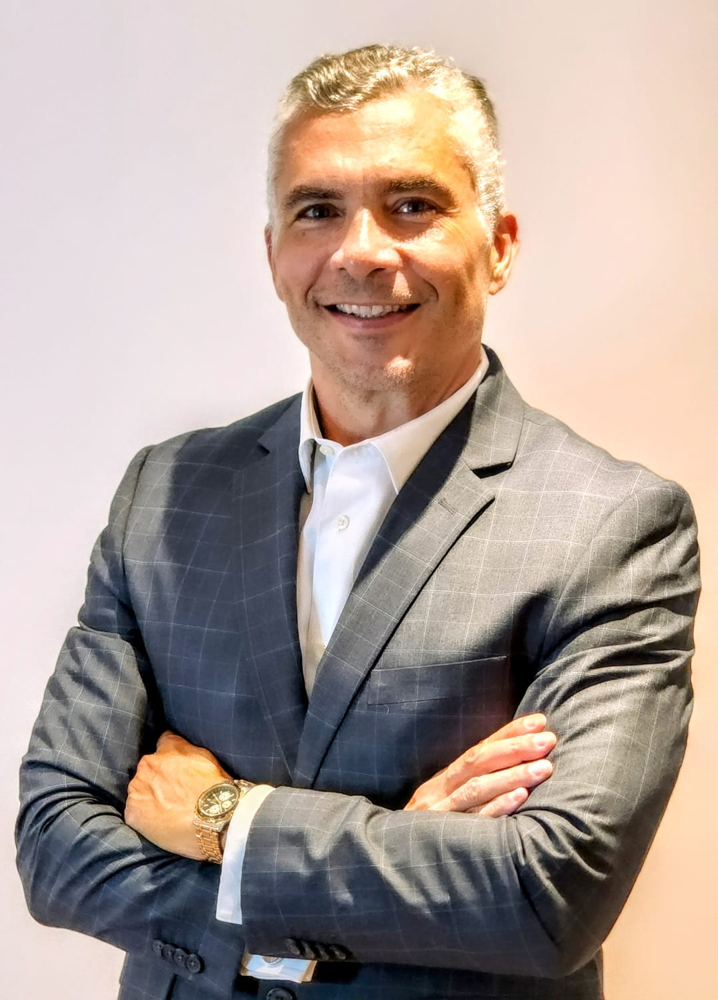
Com vasta experiência em atendimentos de ponta, o Dr. Rafael atua diretamente na gestão de programas de saúde, gestão de pessoas e coordenação médica. Ele vive a realidade dos consultórios e hospitais diariamente, entendendo os desafios práticos da liderança médica moderna.